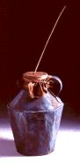
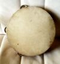
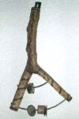
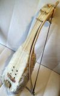
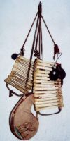

| |
 En
este artículo, trataré de repasar algunos instrumentos musicales tradicionales
y su utilización en las fiestas navideñas. No pretende ser una relación
exhaustiva, sino simplemente una pequeña muestra del uso tradicional de
estos en esta época del año. En
este artículo, trataré de repasar algunos instrumentos musicales tradicionales
y su utilización en las fiestas navideñas. No pretende ser una relación
exhaustiva, sino simplemente una pequeña muestra del uso tradicional de
estos en esta época del año.
En
primer lugar, siempre que hablemos de instrumentos tradicionales, conviene
diferenciar entre dos grandes grupos:
1.-
Instrumentos musicales como tales que eran utilizados el resto del año
en otras celebraciones o que eran construidos específicamente para esas
fechas sin más uso que el musical propiamente dicho: zambombas, panderetas,
panderos, rabeles, hierros, hueseras, guitarras, bandurrias, violines,
etc... La mayoría de ellos eran tocados por gente sin conocimientos musicales,
pero en el caso de guitarras, violines y bandurrias podían ser músicos
especializados.
2.-
Objetos de uso común que no siendo instrumentos musicales eran utilizados
para hacer música, acompañando a la voz con algún tipo de percusión: sartenes,
cucharas, botellas, calderos, cascabeles... en fin, cualquier cosa que
hiciera ruido y estuviera en casa podía ser utilizada para la música.
La razón de ser de estos instrumentos se basa en la necesidad humana de
hacer música con lo primero que se tuviera a mano y en el momento que
fuese, de forma espontánea y sin utilizar los servicios de un músico especializado
(guitarreros, tamborileros, gaiteros, etc...).
Es
en la ejecución de músicas populares con esta clase de instrumentos donde
se encuentra el máximo exponente del ingenio tradicional, ya que se tocan
ritmos que van desde lo más sencillo hasta rozar el virtuosismo.
En
este artículo únicamente me centraré en describir someramente algunos
instrumentos que componen el primer grupo, ya que una enumeración detallada
de todos se saldría del objetivo de estas pocas líneas:
-La zambomba: Aunque se le identifique con la Navidad,
este instrumento también es utilizado en otras épocas del año en diversos
lugares de España, como en Andalucía, La Mancha, Madrid, etc... acompañando
rondas y otros cantos. Se hacía con un recipiente desfondado (cántaro,
barril, tinaja o lata) atando en uno de sus extremos
una piel tensa que a su vez tenía una caña amarrada perpendicularmente
en el centro. Humedeciendo una mano y frotando la caña, el recipiente
amplifica el sonido que genera la vibración de la piel. También se hacían
zambombas (más como juguete infantil que otra cosa) con la vejiga inflada
de un cerdo y una caña, ya que era tiempo de matanza y se les daba a los
niños para que jugaran. En otras ocasiones era un trozo de tripa de dicho
animal, un bote de leche condensada y una pajita lo que se usaba para
hacer otro tipo de zambomba “de juguete”.
Se utilizaba y utiliza
en estas fiestas para pedir aguinaldos por las calles y para acompañar
el canto en las pastoradas y autos sacramentales de algunos pueblos, que
eran representaciones de la Natividad que se hacían en la Iglesia por
parte de los pastores.
A modo ilustrativo,
incluyo la siguiente copla de aguinaldo de la provincia de Salamanca:
“La
zambomba pide pujo,
y el que la toca, prudencia,
si no me dais aguinaldo,
aquí me siento a la puerta”
-Panderetas,
panderos y sonajas: De nuevo estamos ante instrumentos que eran
tanto o más utilizados por el pueblo durante todo el año independientemente
de que fuera o no Navidad. El supuesto origen de pandereta y pandero se
cree árabe u oriental.
La pandereta,
muy utilizada todavía en España como instrumento tradicional, consta de
un bastidor estrecho circular horadado de diversos agujeros en los que
se fijan una serie de piezas metálicas de hojalata o sonajas y que soporta
una piel tensa clavada en su parte superior. Al golpear la piel con la
mano, se produce un sonido brillante causado por las sonajas simultaneo
al sonido grave que genera la mano en el parche de piel. Todo tipo de
manifestaciones musicales se acompañaban y acompañan por la pandereta
en las fiestas de Navidad, como aguinaldos, villancicos, pastoradas, etc.
El
pandero es parecido a la pandereta, pero a diferencia de esta suele ser
de mayor tamaño y no posee sonajas en el bastidor, además la piel está
fijada a este por ambos lados. La forma de dicho bastidor puede ser tanto
circular como cuadrada. Puede llevar semillas, chapas, cascabeles, piedrecitas
o cualquier otro pequeño objeto dentro de él con el fin de enriquecer
el sonido grave de la piel. Se toca con los dedos o golpeándolo con la
palma de la mano. En nuestros días el pandero se sigue utilizando en el
norte de España y hasta hace unas décadas era también muy común en algunas
comarcas de Cataluña.
Hay
que aclarar que en algunos lugares de España se suele llamar a la pandereta
“pandero”, indistintamente.
La
sonaja es otro instrumento muy rudimentario, que consta de un soporte
de madera de formas variadas (desde una “Y” hasta un círculo o un rectángulo)
el cual es atravesado de alambres o cordones fuertes donde van ensartadas
un número variable de chapas semejantes a las de la pandereta. Al agitar
este soporte y golpearlo contra la mano o el muslo se produce un ruido
estridente y brillante a causa del choque de las piezas metálicas o “sonajas”,
que dan nombre al instrumento.
A
continuación incluyo la letra de un villancico castellano en el que aparece
alguno de estos instrumentos y que dice así:
“Con guitarras
y almireces,
panderetas
y sonajas,
vamos
a ver a Jesús,
porque
ha nacido entre pajas”
-El
rabel: El rabel es otro instrumento que se utilizaba en pastoradas
poco conocido fuera del ámbito de la música tradicional. Aunque su origen
no está claro, como ocurre con la mayoría de los instrumentos tradicionales,
todo hace indicar que también fueron los árabes los que lo trajeron a
la península, descendiendo del “rabab”. Se trata de un instrumento de
cuerda con una pequeña caja de resonancia de diversas formas cuya tapa
armónica solía ser una piel tensa de
cordero o una lámina de hojalata. El número de cuerdas era variable, entre
una ytres o cuatro. De todos modos para ejecutar la melodía solo se usaba
una de ellas, haciendo las demás de acompañamiento. El material de las
mismas solía ser tripa, crines de caballo o metal. Se hace sonar con un
arco de crines de caballo untadas en resina. Aparece en multitud de letras
de villancicos tradicionales ya que es un instrumento pastoril por excelencia,
y no es necesario repetir el papel fundamental de estos en el nacimiento
de Jesús y sus celebraciones. Actualmente aún quedan zonas en la Península
Ibérica donde se toca el rabel, como el norte de Palencia y sur de Cantabria
o la Sierra de Gredos.
A
continuación leemos otra copla ilustrativa del instrumento, esta vez de
Cantabria, que bien pudiera ser un aguinaldo navideño:
“El rabel
está enojado,
y el
que lo toca también,
porque
no le dan de aquello,
que rechina
en la sartén”
-Huesera
o arrabel: La huesera o arrabel, como también se le conoce en
gran parte de la zona centro
de la Península Ibérica, es un instrumento de percusión frotado, hecho
con una serie de huesos (tibias de cordero o cabrito) unidos entre sí
por medio de cuerdas o incluso alambres. Colgado al cuello del que lo
toca, y sujeto por la parte inferior con la mano, es frotado con una castañuela
de arriba hacia abajo, lo que genera un sonido con el que se ejecutan
diversos ritmos. Es un instrumento que también se ha usado en rondas el
resto del año, sobre todo en algunos pueblos de Madrid y La Mancha además
de en las fiestas navideñas. En ocasiones en lugar de huesos está construido
con trozos de caña endurecidas con fuego. También recibe el nombre de
ginebra.
Y
con este instrumento termino esta pequeña relación, corta por necesidad,
pero que espero sirva para conocer un poquito más estas joyas musicales
que es necesario divulgar y apreciar para evitar su desaparición, ya que
durante cientos de años han sido (y siguen siendo en afortunados casos)
compañeros inseparables de la fiesta y la celebración familiar por excelencia,
la Navidad.
PUBLICADO
EN : Revista "La Porra" nº 19 - Diciembre 2001 - Editada
por L'Agrupació de Balls Populars de Vilanova i la Geltrú
|
|